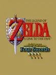

Super Mario World (1990)

- Considerado um dos melhores jogos de plataforma 2D de todos os tempos.
- Trouxe um mondo expansivo, com ,fases secretas, múltiplos caminhos e jogabilidaderefinada..
- Mostrou o poder gráfico e sonoro do SNES logo no lançamento.
The legend of Zelda: A Link to the Past (1991)

- Um dos primeiros jogos com mundo paralelo(luz e trevas), inovando na narrativa e nos puzzles.
- Estabeleceu elementos -chaves da franquia Zelda, como masmorras complexas, itens magícos e exploração não-linear.
- Criou uma fórmula que inspiraria gerações de jogos de ação e aventura.
Super Metroid (1994)

- Pioneiro do gênero METROIDVANIA(expploração + upgrades + backtracking).
- Atmosfera sombria, trilha sonora imersiva e gameplay aberto marcaram uma nova era.
- Influenciou jogos como Hollow knight, Ori, Castlevania e muitos outros.
Chrono Trigger (1995)

- RPG revvolucionário com viagem no tempo, múltiplos finais e sistema d batalhas dinâmico.
- É frequentemente citado como o melhor RPG DA história.
Donkey Kong Country (1994)

- Inovou com grafícos pré-renderizados em 3D em um console 2D.
- Sucesso tecnico e comercial, mostrndo o pontencial do SNES mesmo em fim de geração.
- Trouxe uma trilha sonora memorável e gamesplay desafidor.
Street Fighter II (1991)

- Popularizou os jogos de luta nos consoles caseiros.
- lançamento essencial pra o sucesso inicia do SNES.
- Permitiu jogatinas competitivas em casa, iniciando a cultura e versus entre amigos